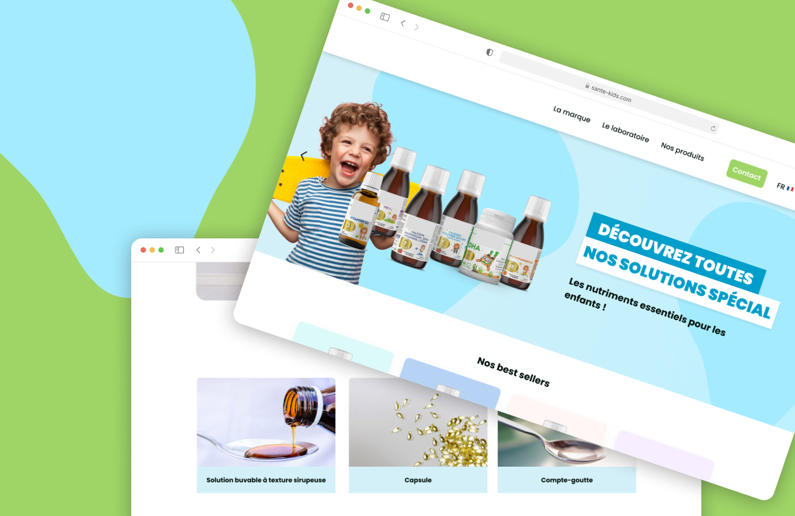
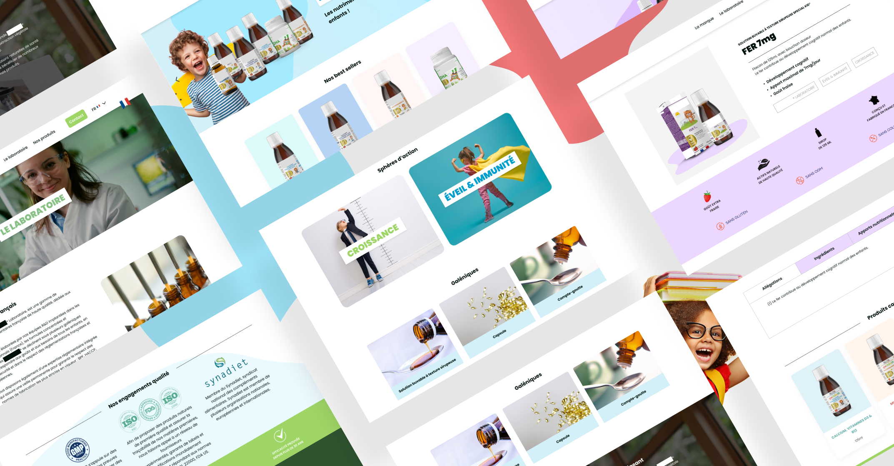
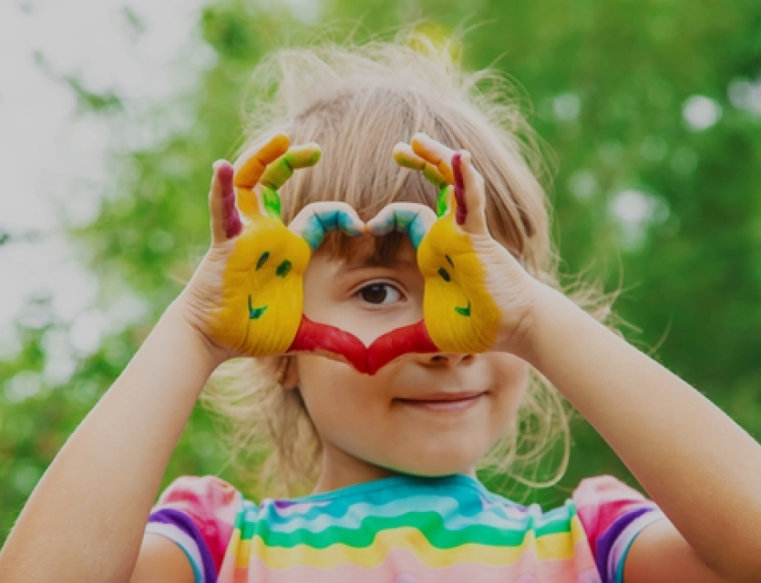

Site e-commerce compléments enfants
Concevoir sur Odoo un site vitrine e-commerce pour une gamme de compléments alimentaires naturels dédiée aux enfants — portée par un laboratoire français présent dans plus de 30 pays.
Le projet
Un laboratoire français spécialisé dans les compléments alimentaires naturels — présent en pharmacies et magasins spécialisés dans plus de 30 pays — souhaitait créer un site e-commerce dédié à sa gamme enfants. Le défi : concevoir une interface rassurante pour des parents soucieux de la santé de leurs enfants, tout en valorisant la légitimité scientifique et le savoir-faire d'un laboratoire reconnu depuis plus de 30 ans.
→ Navigation par sphère d'action (Croissance, Éveil & Immunité) plutôt que par produit
→ Site multilingue FR/EN avec références export hors UE et contact B2B dédié

Une DA humaine, simple et colorée
Le principal enjeu créatif était de trouver l'équilibre entre un univers visuel accessible et joyeux — pour que l'enfant soit aussi acteur de sa santé — et une crédibilité scientifique rassurante pour les parents. Trop clinique, le site effraie. Trop enfantin, il ne convainc pas.
Tonalités douces & vives
Une palette colorée inspirée de l'univers naturel et du jeu — sans tomber dans les codes enfantins standardisés.
Crédibilité scientifique
Mise en avant des certifications laboratoire, des ingrédients sourcés et des mentions légales produit en accès direct.
Signaux de confiance
Avis clients, labels qualité et présence pharmacie intégrés dans la structure des pages pour rassurer à chaque étape.

Tirer le meilleur d'Odoo v16 pour un secteur réglementé
Odoo v16 introduit un website builder plus flexible que les versions précédentes, avec de nouveaux blocs natifs et une meilleure gestion des variantes produit. Pour un site de compléments alimentaires, ces évolutions permettaient de structurer des fiches produit plus riches — sans développement custom.
Gestion des variantes
Déclinaisons par âge, format et contenance gérées nativement — sans avoir recours à des modules tiers.
Multilingue natif
Traduction automatique via Odoo Translate avec révision manuelle pour les textes produit réglementés.
Mentions légales intégrées
Les avertissements réglementaires (DGCCRF, allégations santé) inclus dans les blocs produit standard.
Disponible pour de nouveaux projets